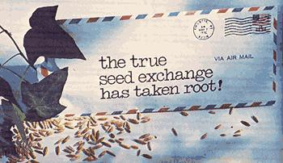

Some of you may recall seeing a letter, back in Issue No. 34's "Dear MOTHER" column, from a fellow by the name of Kent Whealy. In that correspondence, Kent outlined a scheme he'd concocted for setting up what he called the "True Seed Exchange".
"If you've been gardening for a few years," wrote Mr. Whealy, "and are keeping seeds that you know -from your own personal experience-run true, send me your name and address and what kinds of seeds you'll have. By sometime next fall, I'll have a list printed of all the people's names and what varieties they can offer. Anyone will be able to get the list by sending me enough cash to cover printing and mailing costs. Serious gardeners in similar climates can then write one another directly and swap seeds."
A darn good idea, right? Well, we thought so . . . and, apparently, so did a number of readers of this magazine and of other homesteading publications to which Kent sent similar letters. Because today the True Seed Exchange is a Reality . . . a living, breathing, growing network of gardeners (and even a professional horticulturist or two!) who have the foresight and good heart to see the need and importance of such direct cooperation and communication between kindred soil-working souls.
Over the past few months, seeds have been swapped from (for instance) Minnesota to Mississippi, Oklahoma to Ohio, Idaho to Illinois. And, in most cases, the varieties exchanged have not been your run-of-the-mill "modern miracle" hybrids . . . instead, they've been the old-fashioned tried-and-true strains that have been passed down from generation to generation within families and between neighbors. Dependable varieties of fruits and vegetables, in other words, which grew in our grandfathers' gardens but-because of the marketing power of modern seed companies-are no longer available in stores.
What's that? You say you, too, have an "heirloom" breed of squash or beans or broccoli that you'd like to share with others? You say you haven't heard a better idea than the True Seed Exchange in years and you'd like to contribute too . . . but you don't know how to go about saving seed from backyard vegetables?
Then take a few tips from Kent, who explains the process in simple terms: "Just let any seed that forms in a pod (such as beans, peas, okra, lettuce, and radishes," he says, "mature and dry out completely on the plant. Then shell and save 'em. For 'soft' vegetables (such as tomatoes, squash, watermelons, cantaloupes, and cucumbers), let the fruit develop past the edible stage-but not to the point where it's going bad-and then extract the seeds. Put a few in a glass with a little water, set the container in a place away from direct sun, and stir the rascals good several times a day. After 24 hours or so, the nuggets will start to ferment a little . . . which is g ood, because the process kills several potentially harmful bacterial diseases. After three days, rinse the seeds thoroughly, spread 'em on a paper towel, and let them dry completely. Then put each type in a separate envelope and store the packets in a place where mice can't get at them."
And that's all there is to it!
So c'mon, all you homegrown gardeners . . . now's the time to keep an eye on your vegetables to see which ones are the hardiest and most productive (and therefore most worth perpetuating and passing along). Let Kent know soon what kinds of seeds-or bulbs, plants, root cuttings, grains, or legumes-you'll have to swap by the end of the season (remember, this is an exchange network . . . not a source of free planting stock), and send him 50 cents to help cover the cost of printing and mailing his fall list. Along toward the end of the year, he'll send you (and all participants) a directory of folks offering their very best strains in trade for those of others.
Better yet, send Kent a buck or two (or as much more as you can afford). You can be sure that he's already invested a lot of his own time and money in order to plant the True Seed Exchange for all of us, and now it's our turn to help make sure that system continues to grow and develop.
Send your correspondence, contributions, and words of thanks and encouragement to the True Seed Exchange, Kent Whealy, c/o Charlie M. Cunningham, RR 2, Princeton, Mo. 64673.
|
 |
|
|